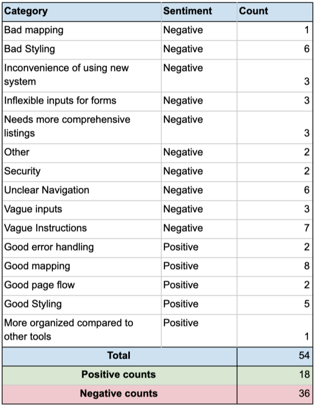

OVERVIEW
UX & HCI Research,
UX Design,
Testing
Feb 2020 - May 2020
Team of 4 designers
Problem
The system that we are creating is not designed to solve an existing problem, but instead it is to streamline an outdated form of subleasing. Currently the only way that someone can sublease their apartment is through services such as Facebook or going directly to a private company that owns the apartment complex. Avenues such as Facebook are not specifically designed for these kinds of functions. There is a lot of noise and unwanted topics that make searching for apartments very inefficient. Going to companies is very efficient, but for many college students, these prices are typically way higher than they would be if the apartment was owned by a private landlord. Our system is basically a dedicated place where subleases can be posted and organized much more cleanly to help make subleasing much more efficient and hassle-free.
Proposal
We are proposing a new application intended to connect subletters with those searching for temporary living arrangements. This application will be a more personal alternative to Craigslist, where users can filter matches by common criteria such as pet permissible, furnished/unfurnished, and apartment layout. Users should also be able to select the dates/terms in which they require availability.
RESEARCH
Interview Goals
These interview sessions were conducted in-person and a
structured interview protocol was used. The protocol
consisted of three parts:
1) Experience searching for a place to
sublease
2) experience searching for a subtenant
3) the participant’s ideal sublease search experience
Each part of this interview was open-ended and the protocol included
follow-up questions to prompt the participant to include
more details in their responses. An example of a follow-up
question is “How long did this process take you?” The
interviewers used their discretion to decide if additional
follow up questions were needed. In the case that the
participant did not have first-hand experience, they were
allowed to describe third-person accounts of subleasing
search experiences.
Recruitment & Conducting Interviews
The participant pool of this study included eight students
who are current or former college students in the
Gainesville area. There were 4 male and 4 female
participants and they ranged in age from 20-28. The
race/ethnicities of the participants were White/Caucasian
(37.5%), Asian/Pacific Islander (37.5%), Multiracial (0%),
Hispanic/Latino (25%), Black/African-American (0%) and
unspecified (0%). The participants volunteered to partake in
this study and were asked to be in a one-on-one with an
interviewer. The interviewer was not consistent throughout
the study as each author of this paper conducted an
interview with two of the participants.
The data was divided into categories to get a better understanding of user
requirements.

User Needs
After reviewing all the collected data, the following user
needs should be addressed:
1. Designated interface specifically for subleasings
2. Sorting by specific details (location, price)
3. Quick general form (location, price point, etc.)
4. Direct messages organized by listings
DESIGN
Low Fidelity Prototype
After pulling in all the team member's sketches together, we decided
on features that are necessary for the design.
The low fidelity prototypes: